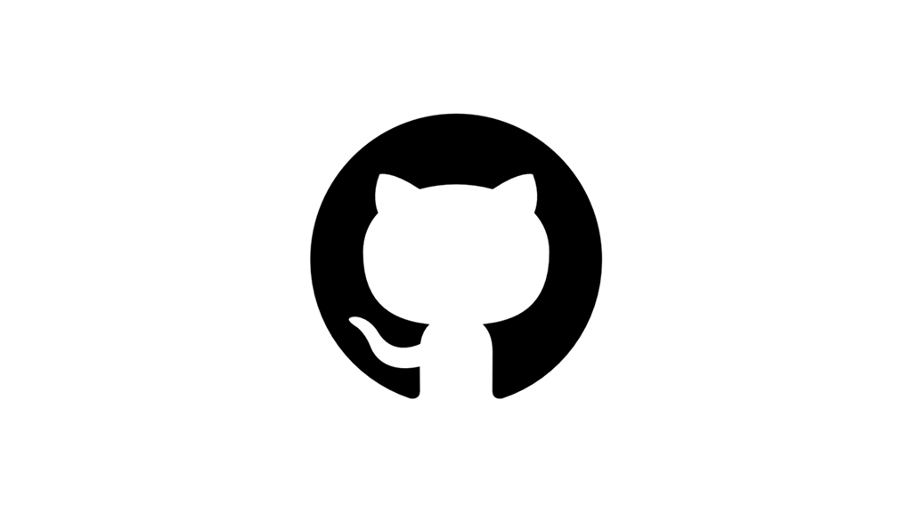
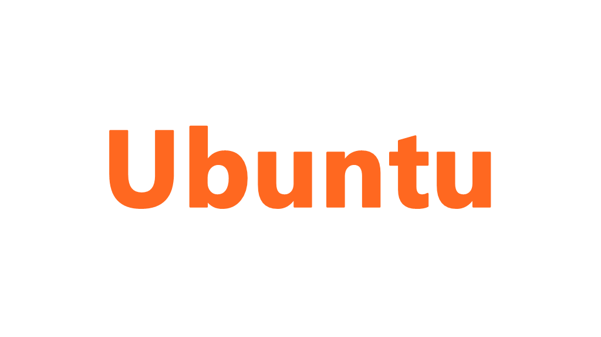
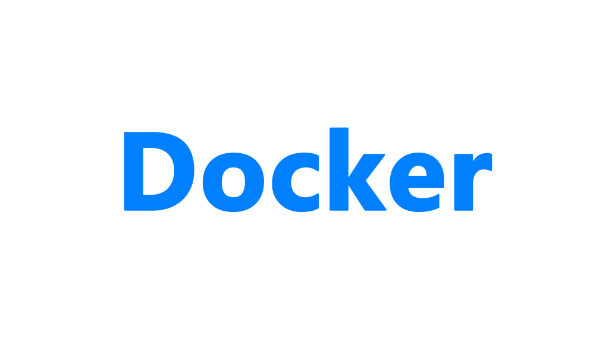
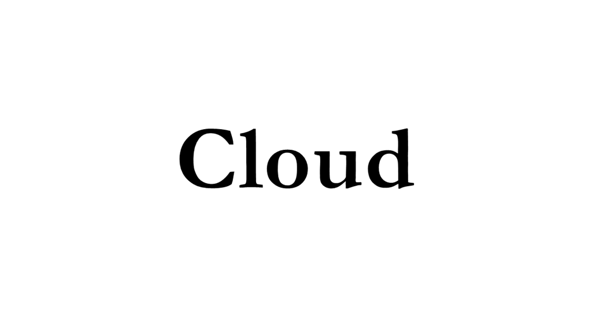
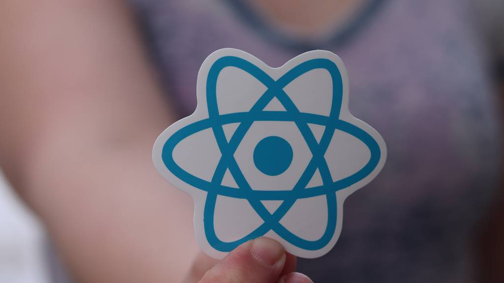

NEW

2022/11/05
TCP/IPとは？階層モデルで行う学習
アプリケーション,トランスポート,インターネット・リンクの4層で構成される。

2022/11/04
GitHubに接続するhttpsとsshの方式について
GitHubのリポートリポジトリと接続する際の方式についての調査を行います。

2022/11/02
WSL2でNext.jsアプリの変更時にHOT Reloadが遅いとき
WSL2でWEBアプリ開発時において、HOTリロードが遅いときの状況と原因について記します。
2022/11/01
Ubuntuのデフォルトユーザーを変更する
WSLでデフォルトユーザーを変更したいとき、スムーズに設定できなかったため記録を残しておきます。
2022/10/24
IT用語学習 第1回「Docker」
IT用語の意味の理解、また語源や使われ方などを学ぶ目的としております。

2022/10/23
Dockerの学習
Dockerの基礎用語理解をし、コマンド操作からでローカル環境での実行・本番環境へのデプロイまでの方法を学習する。

2022/10/22
Cloudの学習
AWSやFirebaseを使ってWEBアプリをデプロイする手法を学習する。

2022/10/21
Reactの学習
コンポーネントやHooks,React特有のJSX記法を学習する。